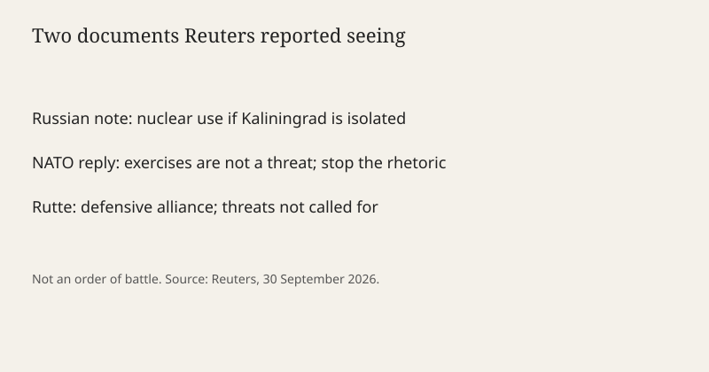

Brussels · Baltic · 1 October 2026
A Russian note seen by Reuters warns of nuclear use if NATO isolates Kaliningrad

What is agreed across desks
Reuters reported on 30 September 2026 that it had seen a Russian diplomatic note delivered to NATO. The note says Russia would be ready to use “the entire arsenal of forces and capabilities at its disposal, including nuclear weapons,” if NATO countries attempted to isolate Kaliningrad from the rest of Russia. It also says strikes could hit “decision-making centers in the alliance’s member states right from the outset.” Moscow called NATO’s course “dangerous and reckless” and said it carried “high risks of the outbreak of a direct armed conflict.”
NATO answered in writing, a reply Reuters also reported seeing. The alliance said none of its exercises or activities posed a threat to Russian territory, urged Moscow to stop “irresponsible nuclear rhetoric,” and called on Russia to end its invasion of Ukraine. Secretary General Mark Rutte said publicly: “We are a defensive alliance. And stop the nuclear threats.” The Kremlin described the note as a message for “hotheads in Europe.” Russian embassies in at least three European countries had, in preceding days, accused NATO of escalating through exercises and Kaliningrad scenarios.
Kaliningrad is a Russian exclave on the Baltic, between Poland and Lithuania, both NATO members. It has no land corridor to mainland Russia. That geography is older than this note. The note does not, in the Reuters text, announce that an isolation operation has been ordered.
What is only a quote
The nuclear sentence is a conditional threat. It is evidence of what the note says Russia would be ready to do if a specified attempt occurred. It is not evidence that NATO has decided to cut the exclave off, and it is not evidence that a weapon has been mated to a launcher for that purpose. “Hotheads” is a Kremlin label for unnamed European officials. Rutte’s sentence is a rejection of the threat, not a description of NATO war plans.
A later line carried by Reuters, that a European attack on Russia would be “a completely different sort of war — a very short war,” is also a threat statement. Short-war talk is a rhetorical form used by several nuclear states. It does not publish an order of battle.
Mechanism
Kaliningrad was Königsberg until 1945. The Soviet Union took the city in the East Prussian campaign and attached the territory to Russia rather than to Lithuania or Poland. After 1991 the exclave remained Russian while its neighbors joined NATO and the European Union. Transit of Russian goods and people across Lithuania is governed by agreements that have been renegotiated whenever sanctions or military tension rise. Isolation, in the note’s wording, is not defined as a specific rail closure, a naval blockade, or an air denial. That ambiguity is part of the document’s force: almost any tightening of access can be described, later, as the condition the note named.
Nuclear signaling around Kaliningrad is not new. Russia has based Iskander missiles in the oblast and has said, in earlier crises, that the exclave is covered by the national nuclear deterrent. The 30 September note is specific in audience — NATO as an organization — and specific in trigger — an attempt to isolate the region. Reuters’ access is to the text, not to the Russian Security Council minutes that produced it. A note “seen by Reuters” is a high-quality wire method, and it is still a single-newsroom reading until NATO or Moscow publishes the document.
NATO’s public doctrine says the alliance is defensive and that nuclear weapons are political weapons of last resort for its three nuclear-armed members. Defensive doctrine does not mean the alliance has no plans for the Baltic. It means the published policy rejects a first move to sever Kaliningrad. Exercises in Poland, Lithuania, and the Baltic Sea are checkable events. Whether a given exercise rehearses a blockade is a claim the note asserts and NATO denies. The denial is also a statement, not a release of the exercise script.
For U.S. readers the channel matters. The United States is the largest NATO member and a nuclear-weapon state. A threat to strike decision-making centers “from the outset” includes, on its face, capitals and headquarters, not only local radars. That is why the note is a U.S. story even though the map is the southeast Baltic. It does not, by itself, change the U.S. alert status. No wire used here reported a change in DEFCON, a dispersal of bombers, or a new presidential nuclear employment order on 30 September.
What the story is not
It is not a report that Russia used a nuclear weapon. It is not a report that NATO closed the Suwałki corridor. It is not a finding that every embassy statement matches the note word for word. It is not a prediction that the next Baltic exercise will be answered with a launch. Conditional threats are cheap to send and expensive to ignore; both facts can be true without converting the note into an event that has already happened.

Source articles and scores
| Outlet | Headline | T | N | C |
|---|---|---|---|---|
| Reuters | Russia sends nuclear warning to NATO as tensions rise in the Baltic | 94 | 0 | 96 |
| Reuters | NATO alliance is defensive, Russia should stop nuclear threat, Rutte says | 95 | 0 | 100 |
| Hromadske | Russia warns NATO it could use nuclear weapons over attempts to isolate Kaliningrad | 90 | -8 | 92 |